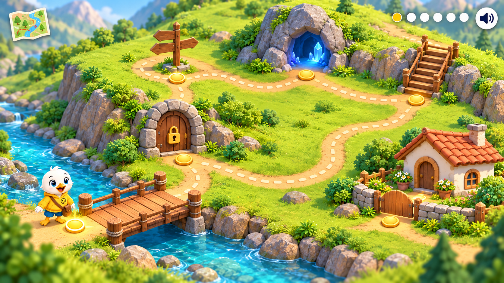
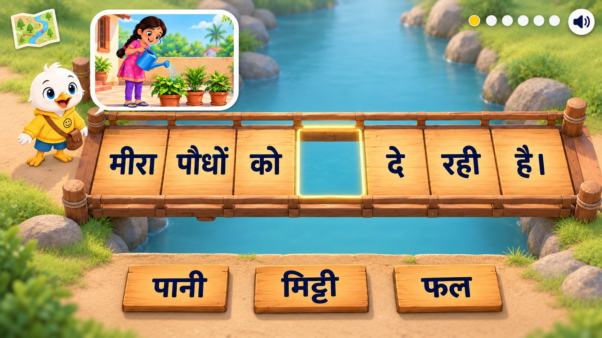
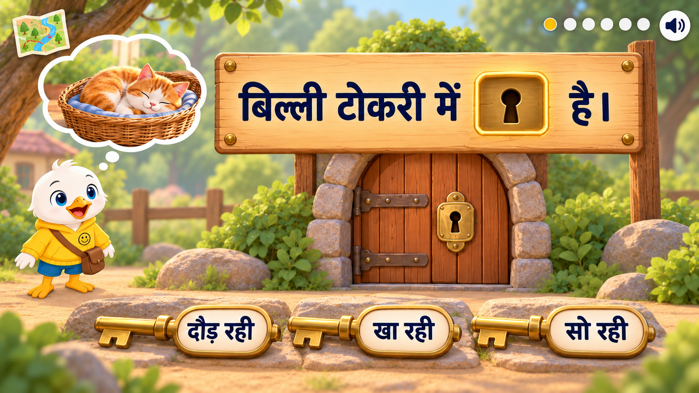
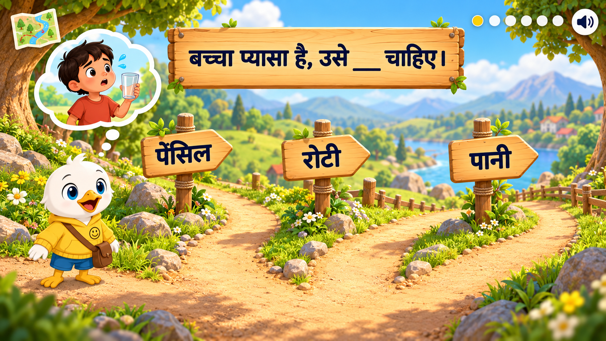
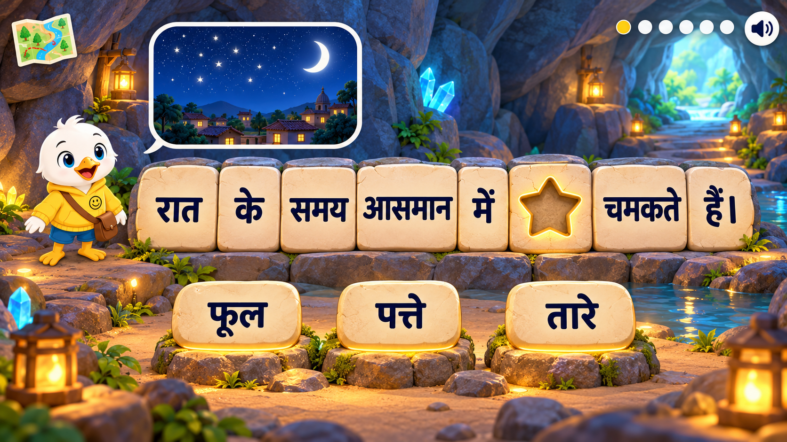
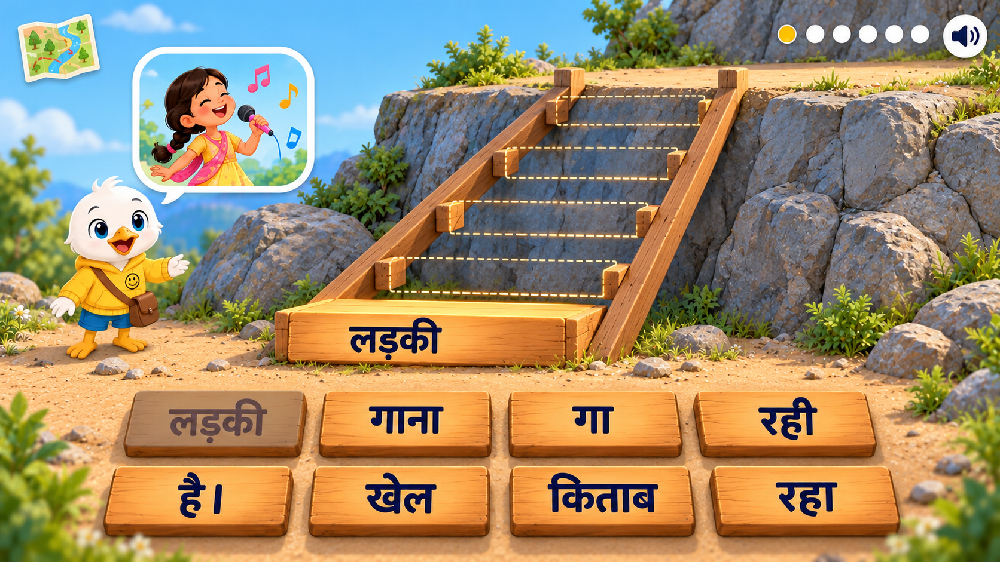
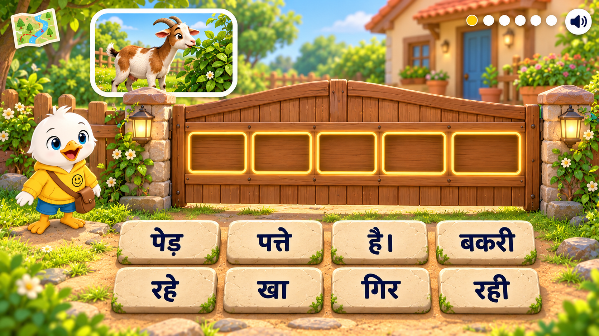

यात्रा का map
पुल → दरवाज़ा → रास्ते → गुफा → सीढ़ियाँ → दोस्त का गेट

1. पुल जोड़ो
सही शब्द वाला तख्ता खाली जगह लगे; Swifty पुल पार करे।

2. ताला खोलो
सही शब्द वाली चाबी चुनो; दरवाज़ा खुले।

3. सही रास्ता चुनो
सही शब्द वाले संकेत का रास्ता चुनो; Swifty आगे चले।

4. गुफा में रोशनी करो
सही शब्द लगाने पर रास्ता रोशन हो।

5. गायब सीढ़ियाँ बनाओ
शब्द क्रम से लगाओ; हर सही शब्द पर अगली सीढ़ी जुड़े।

6. दोस्त के घर पहुँचो
वाक्य पूरा करो; गेट खुले और दोस्त स्वागत करे।
ये visual concepts हैं; अभी playable game या अलग-अलग transparent sprite assets नहीं हैं। मौजूदा game में इस adventure के बदलाव नहीं लगाए गए हैं।